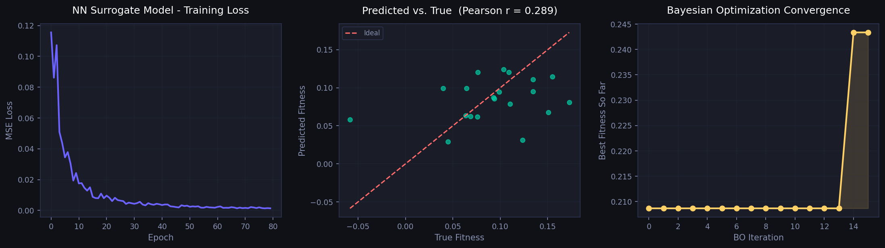

Protein Design AI Pipeline
ESM-2 × Bayesian Optimisation × ProteinMPNN × REINFORCE RL
PyTorch
HuggingFace Transformers
BoTorch
GPyTorch
scikit-learn
Pipeline Architecture
🧬
Protein Sequences
Demo / ProteinGym
→
🤖
ESM-2 8M
320-D embedding
→
🧠
MLP Surrogate
Fitness predictor
⤵
📈
Bayesian Opt
GP + LogEI
|
🕸
ProteinMPNN
Graph NN design
|
🎯
REINFORCE RL
LSTM policy
Key Results
320-D
ESM-2 Embedding Dimension
8M params, pre-trained on 250M sequences via MLM
81.9%
PCA 8D Variance Explained
Enables numerically stable GP covariance matrix
+16.6%
Fitness Improvement (BO)
0.209 → 0.243 in 15 iterations (qLogEI)
✓ Conv.
RL Policy Convergence
REINFORCE + teacher-forcing, 20 episodes
✓ Conv.
ProteinMPNN Loss
k-NN Cα graph, scatter-add message passing
<2 min
Full Pipeline Runtime
CPU only, reproducible, after ESM-2 download
Visual Results

Bayesian Optimisation: training loss, surrogate predictions, and BO fitness curve

REINFORCE RL: multi-objective reward over training episodes

ProteinMPNN: cross-entropy training loss over steps
Core Algorithms
ESM-2 Mean Pooling
z = Σ(mₜ · hₜ) / Σ mₜ
- Masked Language Modelling pre-training
- Evolutionary co-variation captured
- Zero-shot transfer to fitness prediction
Bayesian Optimisation
α(x) = log E[max(f(x)−f*, 0)]
- GP surrogate in PCA-reduced space
- qLogExpectedImprovement (BoTorch)
- Sample-efficient: <20 oracle calls needed
ProteinMPNN
h⁽ˡ⁺¹⁾ = LN(h⁽ˡ⁾ + ReLU(Wₒ · Σ φ(h,e)))
- k-NN graph on Cα coordinates
- 19-D edge features (distance + direction)
- Cross-entropy objective per residue
REINFORCE RL
∇J(θ) = E[∇log π(a|s) · Gₜ]
- LSTM autoregressive policy
- Teacher-forcing log-prob computation
- Multi-objective reward (stability + hydrophobic + charged)
Codebase Structure
| Module | Purpose | Key API | Status |
|---|---|---|---|
src/embeddings.py |
ESM-2 feature extraction, lazy load, batched inference, mean pooling | ESM2Embedder.transform(seqs) | ✅ Tested |
src/predictor.py |
MLP surrogate (LayerNorm + Dropout), AdamW training, evaluate with Pearson / Spearman | PredictorTrainer.fit() .evaluate() | ✅ Tested |
src/bayes_opt.py |
Gaussian Process + qLogEI, PCA dimensionality reduction, BoTorch integration | BayesianOptimizer.run(n_iter) | ✅ Tested |
src/protein_mpnn.py |
k-NN Cα graph builder, MessagePassingLayer, cross-entropy training | ProteinMPNNTrainer.train_demo() | ✅ Tested |
src/rl_reinforce.py |
LSTM policy, REINFORCE update, multi-objective reward, teacher-forcing grad | REINFORCETrainer.run(episodes) | ✅ Tested |
src/data_prep.py |
Synthetic demo data generator + ProteinGym CSV loader | make_demo_data(n, seq_len) | ✅ Tested |
run_pipeline.py |
CLI entry point, orchestrates all modules | --mode all/bo/rl/mpnn | ✅ Tested |
demo_notebook.ipynb |
Interview live demo — step-by-step walkthrough with inline plots | Jupyter Notebook | ✅ Ready |
Quick Start
# Install dependencies (~2 min)
pip install -r requirements.txt
# Full pipeline with real ESM-2 embeddings (downloads ~30 MB on first run)
python run_pipeline.py --mode all
# Individual modes
python run_pipeline.py --mode bo --epochs 100 --bo-iters 20
python run_pipeline.py --mode rl --rl-episodes 50
python run_pipeline.py --mode mpnn
# Interactive live demo (Jupyter)
jupyter notebook demo_notebook.ipynbDiscussion Points for Interview
Why ESM-2 over one-hot?
- Captures long-range co-evolution (MSA-free)
- Implicit structure knowledge from pre-training
- Transfer learning reduces labelled data requirement
Why PCA before GP?
- 320-D GP covariance is ill-conditioned
- 8-D retains 81.9% variance, well-conditioned
- Reduces computational cost O(n³ → n·d²)
REINFORCE vs PPO?
- REINFORCE: simple, exact PG, high variance
- PPO: clipped surrogate, much lower variance
- For production: PPO / SAC preferred; REINFORCE good for prototyping
Wet-lab integration?
- Use BO to select top-k sequences per round
- Query assay → add to GP training set
- Iterate: active learning loop (Bayesian optimization)